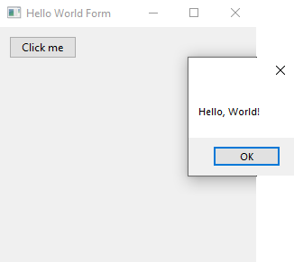
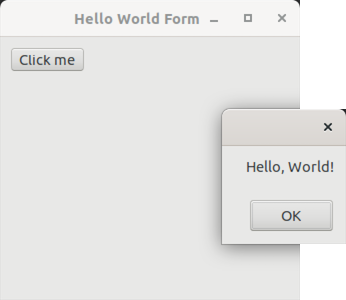
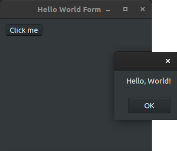

xtd (pronounced "extend") is a modern c++17/20 framework to create console, forms (GUI like WinForms) and unit test applications on Windows, macOS, Linux, iOS and android.
Features
- Free and open-source (MIT License);
- a collection of native C++ classes libraries, to complete std;
- API close to the .net API with a modern C++ approach and full integration with the std standard;
- xtd is designed to manage GUI controls and dialogs in pure native mode or with CSS styles.
- written in efficient, modern C++ 17/20 with RAII programming idiom;
- and highly portable and available on many different platforms (Windows, macOS, Linux, iOS and android);
- See features for more informations.
xtd libraries architecture
xtd is composed of several libraries.
xtd.core
The xtd.core library is modern C++17/20 libraries of classes, interfaces, and value types that provide access to system functionality. It is the foundation on which c++ applications, components, and controls are built.
xtd.drawing
The xtd.drawing library contains types that support basic GDI+ graphics functionality. Child namespaces support advanced two-dimensional and vector graphics functionality, advanced imaging functionality, and print-related and typographical services. A child namespace also contains types that extend design-time user-interface logic and drawing.
xtd.forms
The xtd.forms library contains classes for creating Windows-based applications that take full advantage of the rich user interface features available in the Microsoft Windows, Apple macOS and linux base operating system.
xtd.tunit
The xtd.tunit library is a unit-testing framework for modern C++17/20 inspired by Microsoft.VisualStudio.TestTools.Cpp.
See xtd libraries hierarchy.
Getting Started
- Installation provides download, install and uninstall documentation.
- Guide provides xtd guides and tutorials.
- Examples provides over 750 examples to help you use xtd, grouped by libraries and topics.
Examples
The classic first application 'Hello World'.
Console
hello_world_console.cpp:
#include <xtd/xtd>
auto main() -> int {
console::background_color(console_color::blue);
console::foreground_color(console_color::white);
console::write_line("Hello, World!");
}
The xtd namespace contains all fundamental classes to access Hardware, Os, System,...
Definition xtd_about_box.h:10
CMakeLists.txt:
cmake_minimum_required(VERSION 3.20)
project(hello_world_console)
find_package(
xtd REQUIRED)
add_sources(hello_world_console.cpp)
Represents information about target type, such as the target identifier. This class cannot be inherit...
Definition target_type.h:17
Build and run
Open "Command Prompt" or "Terminal". Navigate to the folder that contains the project and type the following:
Output
Forms
hello_world_forms.cpp:
#include <xtd/xtd>
class main_form :
public form {
public:
main_form() {
text("Hello world (message_box)");
button1.location({10, 10});
button1.parent(*this);
button1.text("&Click me");
button1.click += [] {
message_box::show("Hello, World!");
};
}
private:
};
auto main() -> int {
application::run(main_form());
}
CMakeLists.txt:
cmake_minimum_required(VERSION 3.20)
project(hello_world_forms)
find_package(
xtd REQUIRED)
add_sources(hello_world_forms.cpp)
Build and run
Open "Command Prompt" or "Terminal". Navigate to the folder that contains the project and type the following:
Output
Windows:

macOS:
Linux Gnome:


Unit tests
hello_world_test.cpp:
#include <xtd/xtd>
#include <string>
using namespace std;
namespace unit_tests {
class test_class_(hello_world_test) {
string s = "Hello, World!";
assert::are_equal("Hello, World!", s);
}
string s = {'H', 'e', 'l', 'l', 'o', ',', ' ', 'W', 'o', 'r', 'l', 'd', '!'};
valid::are_equal(13,
s.size());
string_assert::starts_with("Hello,", s);
string_assert::ends_with(" World!", s);
}
};
}
auto main() -> int {
}
The console_unit_test class is console unit test interface.
Definition console_unit_test.h:23
int32 run()
Runs all tests in this unit_test object and prints the result.
#define test_method_(method_name)
Add test method to class test.
Definition test_method_attribute.h:89
The tunit namespace contains a unit test library.
Definition abort_error.h:10
CMakeLists.txt:
cmake_minimum_required(VERSION 3.20)
project(hello_world_test)
find_package(
xtd REQUIRED)
add_sources(hello_world_test.cpp)
Build and run
Open "Command Prompt" or "Terminal". Navigate to the folder that contains the project and type the following:
Output
See also